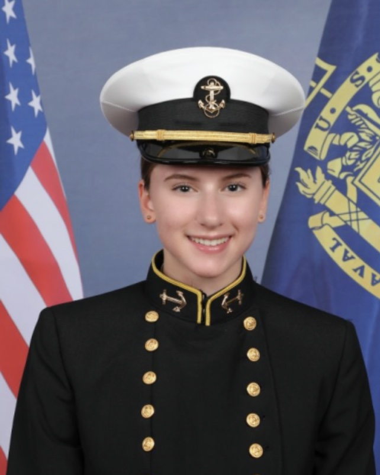
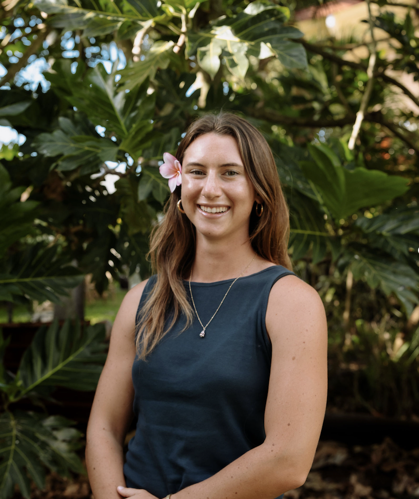

leader
“Whoever would be great among you must be your servant,” Matthew 20:26
When I was eight, my dad told me I'd make a good Naval Officer. We were driving home from soccer practice in his black station wagon. At the time, I laughed at the idea. But ten years later, I was marching into the pompous Bancroft Hall of the United States Naval Academy, begining my leadership journey.

After six weeks of indoctrination, I emerged a humbled, yet determined version of myself, eager to grow as a leader of sailors and marines. Three years as an engineering student and member of the Offshore Sailing Team at the Naval Academy served as the most valuable foundation for my personal leadership philosophy.
I did not have the privilege of commissioning in the Navy — read more about my experience with chronic illness here — but still employ my training and experienes in my current roles.
The next stop on my path was the University of New Hampshire where I completed my Bachelor's in Ocean Engineering and defended my capstone on Remote Acoustic Monitoring of Offshore Wind Turbines. Two years later, I defended my Master's thesis on a Systematic Analysis of Cold Front Conditions on O'ahu at the University of Hawai'i. At both institutions, I studied under exceptional mentors and gleamed from their wisdom
After hanging up my cap and gown, I joined Sunset Beach Christian Church as a part-time and unpaid cleaning lady. Today, I am the full-time Organizational Director and oversee a small team of interns on our staff.
My leadership training now looks like gazing at Jesus. He took everything I thought I once knew about success and leadership and flipped it upside down. I am learning now how to better serve, love, and lead those around me and I could not be more grateful for the trials, training, and tutelage that has spurred me on along the way.
